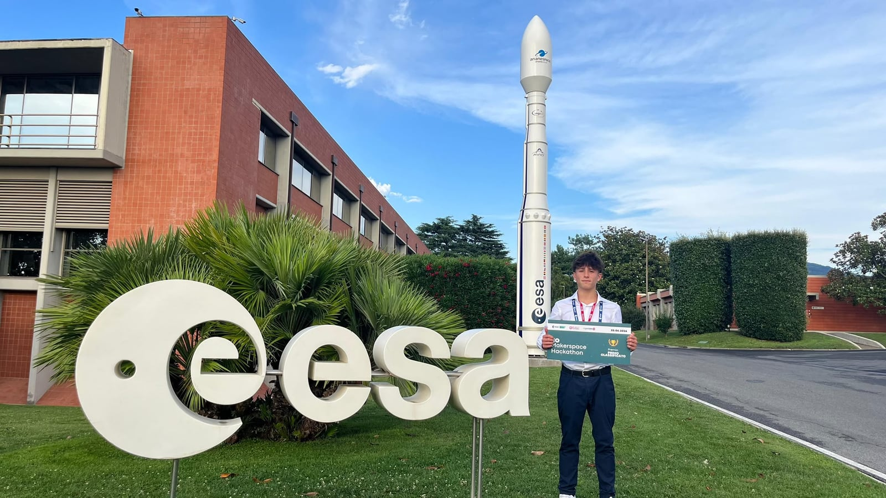
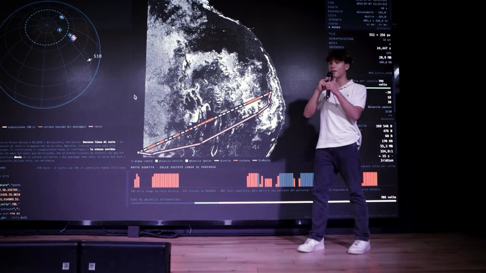

IceRoute
Sea ice segmentation onboard the satellite.
Segmentazione del ghiaccio marino a bordo del satellite.
Ice charts reach a ship's bridge hours after the satellite saw the ice, and the fastest service today still processes the scene on the ground. IceRoute moves that step into orbit: a 2 MB INT8 U-Net reads a Sentinel-1 radar scene and maps the ice, the IMO POLARIS rules turn the map into where a given ship may go and how fast, and A* finds the fastest legal route. The satellite sends down the verdict, 148 KB of ice map and route, instead of 55 MB of radar.
Le carte del ghiaccio arrivano in plancia ore dopo che il satellite ha visto il ghiaccio, e il servizio più rapido di oggi elabora ancora la scena a terra. IceRoute porta quel passo in orbita: una U-Net INT8 da 2 MB legge una scena radar Sentinel-1 e mappa il ghiaccio, le regole POLARIS dell'IMO trasformano la mappa in dove una certa nave può andare e a che velocità, e A* trova la rotta lecita più veloce. Il satellite manda a terra il verdetto, 148 KB di mappa e rotta, invece di 55 MB di radar.
The concept won the EO Makerspace Hackathon with the Space Eagle team. After it I wrote the whole software on my own: data pipeline on the AI4Arctic dataset, training, ONNX export and INT8 quantization, probability calibration, POLARIS routing, evaluation on the official test set and an offline console. About 25,000 lines of Python, more than 600 tests, and every engineering decision written down with the measurement that settled it.
Il concept ha vinto l'EO Makerspace Hackathon con il team Space Eagle. Dopo ho scritto da solo tutto il software: pipeline dei dati sul dataset AI4Arctic, addestramento, export ONNX e quantizzazione INT8, calibrazione delle probabilità, rotte POLARIS, valutazione sul test set ufficiale e una console che funziona offline. Circa 25.000 righe di Python, più di 600 test, e ogni scelta tecnica scritta con la misura che l'ha decisa.
1st1ºEO Makerspace Hackathon 2026, ESA Φ-lab
- Segmentation, official test setSegmentazione, test set ufficiale
- mIoU 0.532
- Ice / water accuracyAccuratezza ghiaccio / acqua
- 90.6 %
- Model on boardModello a bordo
- 2.05 MB INT8, 1.96 M parameters2,05 MB INT8, 1,96 M parametri
- Downlink reduction, measuredRiduzione del downlink, misurata
- 439 : 1
- Packet sent to the shipPacchetto inviato alla nave
- 148 KB, route alone 431 bytes148 KB, la rotta da sola 431 byte
- Calibration error (ECE)Errore di calibrazione (ECE)
- 16.4 → 3.9 %

